NoSQL 新贵之崛起的 Neo4j
2018-07-10
1. Things Happen for A Reason
我最喜欢的一部电影《危情谍战》中有这样一句台词，“Things Happen for A Reason”，不知道为什么，直到今天我对这句台词的印象都很深刻，也许是当时看到这句话的时候脑海里灵光一现，或是引起共鸣才会烙下这么深刻的印象吧。几乎从那以后，不论是做事还是进行思考，我都会自然而然的养成从底层逻辑逐步的来挖掘和分析事物的核心原理。
比如说最近在做产品的技术架构设计，其中几乎有一大半时间都是在梳理业务流程和需求，将业务进行分类处理，再做相关的技术调研。其中 Neo4j 算是技术方案中的核心角色之一，这篇 post 也算是做这个架构设计中关于 Neo4j 这个 NoSQL 数据库的一些感想。
1.1 Neo4j
如何快速的了解 Neo4j 呢，网上有很多很长的文字，不过我觉得都没有简单明确的讲清楚。我想了想，如何让大家最快最高效的理解 Neo4j，最好的办法就是下面总结的几句话：
- 开源 NoSQL 数据库，原生的图数据库，2003 年开始开发，使用 scala和java 语言，2007年开始发布；
- 世界上最先进的图数据库之一，提供原生的图数据存储，检索和处理；
- 采用属性图模型（Property graph model），极大的完善和丰富图数据模型；
- 专属查询语言 Cypher，直观，高效；
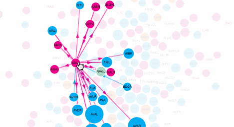
2. Neo4j Kernel
图数据库有很多，在这个 wiki 上有一个比较完整的列表：List of graph databases，其中有的似乎已经没有维护了，有的呢是传统的 NoSQL 数据库，但是提供图数据结构存储，有的也像 Neo4j 一样是专用的图数据库，但是即使是专门的图数据库，其底层实现，应用场景和生态也是有天差地别的。
今天我们着重看看 Neo4j，咱们主要从下面几个方面来学习和深入理解 Neo4j。
2.1 Native Graph Storage and Processing
前面我们讲过，现在其实已经有很多图数据库了，其中有一些 document 类 NoSQL 数据库（假设叫 A DB），也支持图数据结构的存储和检索，那这类数据库和 Neo4j 最大的区别，就是接下来我们要说的 Native 和 non-Native 图数据库了。简单来说，Neo4j 是 Native 的图数据库，A DB 属于 non-Native 图数据库了。
所谓 Native 图数据库，中文一般翻译为 “原生图数据库”，指从一开始便是为了解决图类数据结构而设计的数据库。对了解数据结构的同学来看，这里的 “原生” 的体现，其实主要就在两个方面：
- 图数据结构的存储
- 图数据的处理和查询
我们也从这两个点来聊聊 Neo4j。
图数据结构的存储
不管是什么数据库，mysql，sql server，mongo，neo4j 等等，其存储的数据，最终都要落地到文件系统上的，那 neo4j 落地的文件大概都是什么样的呢？这里我以本地的一个应用的数据库来介绍一下。
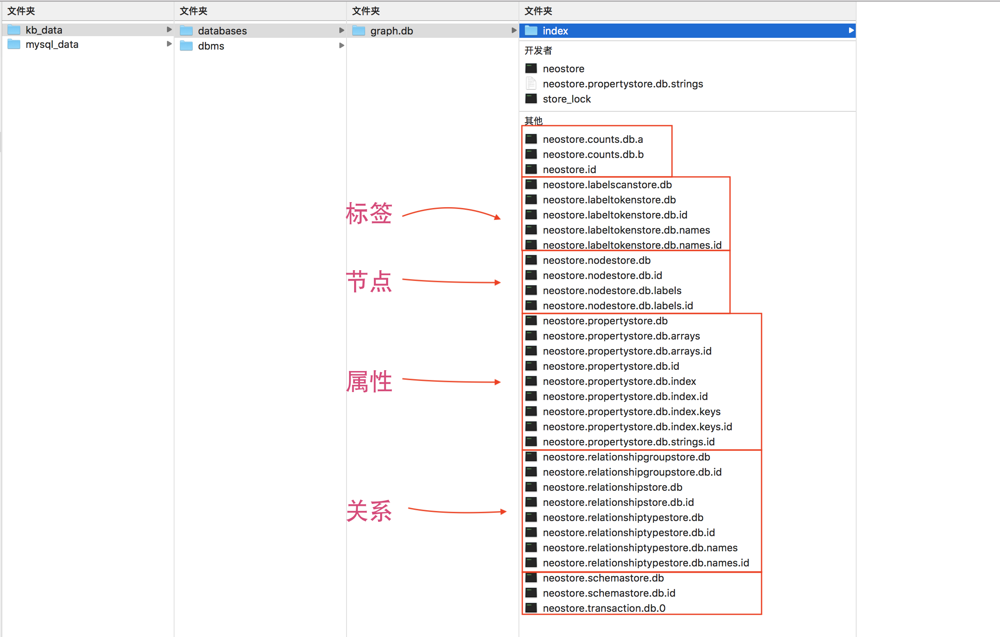
上面是我的本地一个图数据库的数据库文件，可以看出 Neo4j 把其数据库文件分为四大类来分类存储：
- 标签
- 节点
- 属性
- 关系
其实按照我们图论中的一般说法，其实对于一个图数据结构来说，只需要存储节点和关系就可以了，如下面这个图数据一样： 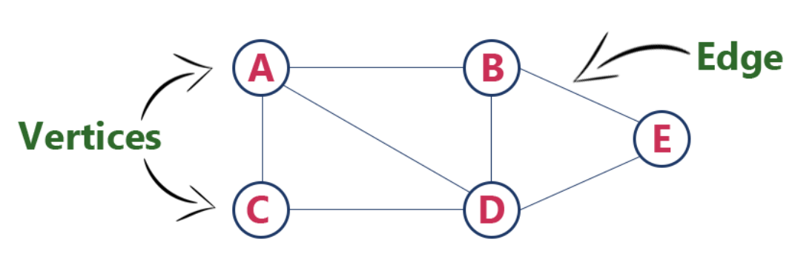
但是现实生活中，我们的图结构是非常复杂的，而且数据量很大，经常需要做各种各样的分析，甚至还需要做聚类分析（这里的聚类分析不是指机器学习里面的聚类模型，而是指把同一类数据提取出来单独做分析，类似于 groupby 的操作）。所以 Neo4j 里面在文件系统上单独存储了标签和属性，就是为了在做检索和分析的时候保证性能。下面咱们以一个形象的例子来介绍什么是标签，什么是属性。
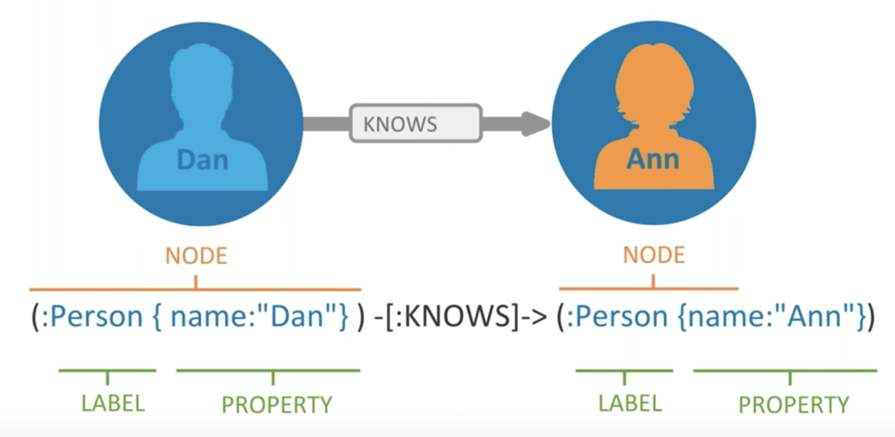
这里是我们应用中一个实际案例，大家看看我们对标签和属性的划分： 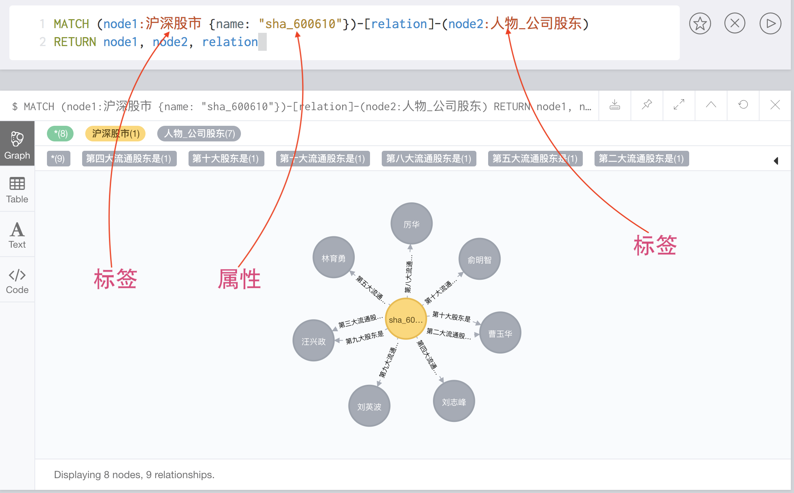
-- 这里咱们先看看这个语句表达的什么意思，这是 Neo4j 专用的查询语言 Cypher
-- 大家不要听到又要学一门新语言就打退堂鼓哈，哈哈哈，后面我们会简单讲讲这个语言的，两个字：简单
-- 下面这个查询语句含义如下：
-- step 1: 首先查询一个具有标签为 “沪深股市”，且有一个属性对 “{name: "sha_600610"}” 的节点，
-- step 2: 然后查找这个节点的所有双向关系
-- step 3: 在这些关系的中，要求另外一个节点具有 “人物_公司股东” 这个标签
-- step 4: 返回这个节点，以及满足要求的关系和相关节点
MATCH (node1:沪深股市 {name: "sha_600610"})-[relation]-(node2:人物_公司股东)
RETURN node1, node2, relation
有人可能会问，其实也可以不用单独存储标签和属性的呀，我们完全可以把标签和属性作为节点的元信息存储在节点里面。这个说法首先在理论和工程实现上来说完全没有问题。但是试想一下，一个节点和关系非常非常大的图，要做上面这个检索的时候，会不会面临一些问题？而 Neo4j 的这种存储设计，是如何来解决这些问题的呢？这两个问题留给大家思考，可以在评论里交流大家的想法。
图数据的处理和查询
图数据的处理，同传统数据库一样的四字法则：CURD。而因为图数据的特殊性，在大多数情况下，数据库中每一个节点都有与之相连的关系，每一条关系，都必须有这个关系对接的两个节点。这就要求图数据库的创建，更新，读取，删除都必须满足一致性（或者事务完整）的原则。Neo4j 如何实现 ACID 的底层算法我还没有看，感兴趣的可以先看看这个 talk： Evolution of Neo4j with ACID transactions, HA cluster, and CRUD transactions。
数据库的查询，这个不管是什么数据库，都是最基础的功能，对于 sql 和 nosql 来说，简单的查询其实并没有多大差别，只是一些复杂查询或者针对特定场景的查询条件下才会特地的选择某一种数据库。比如最常见的就是现在的大多数 WEB 应用，在存储上基本上都会涉及下面几类数据库：
- HDFS: 存储原始数据文件（这里把 HDFS 叫做数据库有些许不准确，只是想表达常见应用中的数据存储结构，请大家莫深究）
- MySQL: 存储应用核心数据
- Mongo: 存储一些不合适用关系型数据库存储的数据，比如说图片，文档等
- Redis: 缓存热点数据，比如说用户 cookies，应用中的计数器等
但是在实际应用中，会经常性出现一些很复杂的查询语句，比如下面几种例子：
-
在 APP 应用中，我们想要知道昨天新增的用户中，有多少今天是继续登陆 APP 的，这种查询扩展开来，就是做 APP 用户增长中耳熟能详的 cohort analysis，下面有截图展示这种分析的图表 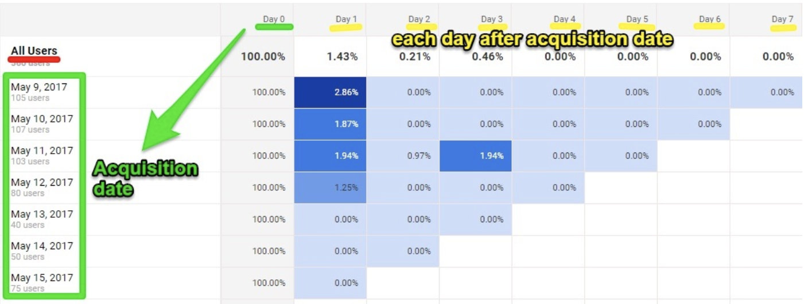
-
人际关系网络中，给定两个节点，查询这两个节点的最短路径，并且这些路径满足一定的条件？这样说是不是有点书面化，那我们换一种说法，在社交网络中，如果你想认识特朗普的女儿伊万卡，查询一条最短路径让你结识到伊万卡，并且这个路径中每个人都是单身的。相信我，这是完完全全可能的，而且不管你是谁，很可能通过6～7个人就能认识伊万卡了，amazing。不信的同学可以去了解了解六度分隔理论这个东西。 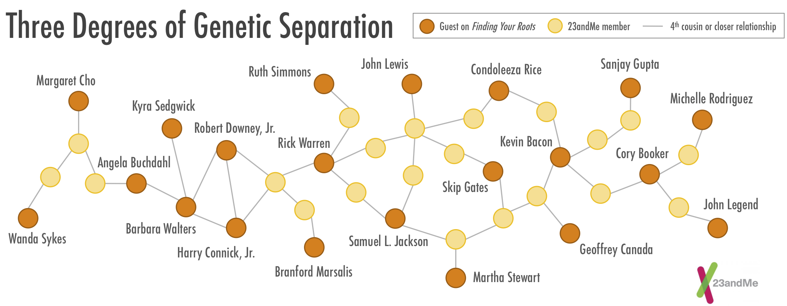
在上面这些复杂查询中，特别是第二种情况，用传统的关系型数据库实现起来实在是不切实际。不光是性能上的原因，还有开发人员可用性的考虑，试想如果这样子一个查询，用 sql 来写的话，这个 sql 语句应该怎样写？下面是一个案例，展示一个查询用 neo4j 和 sql 下的对比。
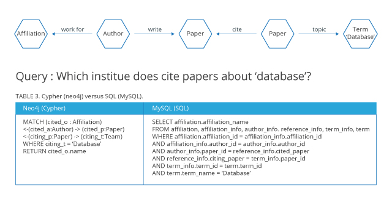
2.2 Property Graph Model
上面我们讲了 Neo4j 的数据存储大概分为：节点，关系，属性，标签这四个类别，这是 Neo4j 存储模块的工程实现，而现在我们要讲的 Property Graph Model 就是这个工程实现的理论来源。正如有的朋友会说，其实简单的存储节点和关系，然后其他标签，属性什么的都可以算做节点和关系的元信息来存储就行了。工程上实现的确也可以，但是理论上去研究，会发现这样的效率会很低。
Property Graph Model，简单的说，其实就是 Neo4j 的底层数据模型，这个数据模型推动了工程上按照四个方面来实现存储模型。那什么叫 Property Graph Model 呢，其实从核心上来讲，Property Graph Model 有两个核心要素：
- 节点：
- 每一个节点都是图中的一个实体
- 每一个节点可以容纳足够多的属性，以键值对的形式
- 每一个节点可以被打一个标签，这些标签相当于是特定知识领域的一种分类标准
- 关系：
- 每一条关系可以是有向的，无向的，命名的
- 每一条关系必须有两个对应的节点
下面是一个 Property Graph Model 的展示：
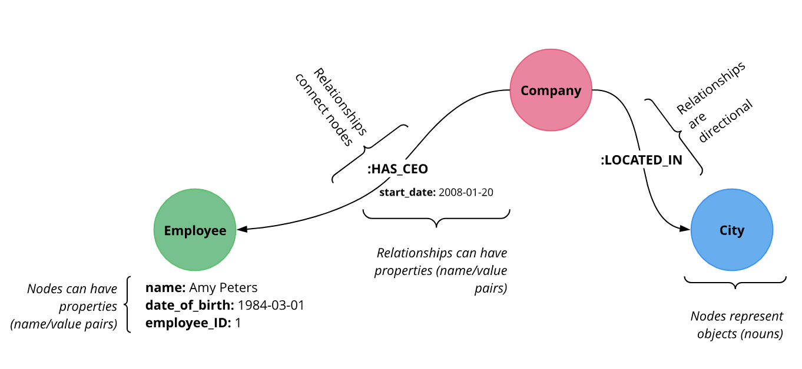
2.3 Cypher Language
每种数据库都有自己的一套查询语言或者标准，就算是 SQL 中的王者 Sql Server 和 MySQL，其在一些语法细节上也有差异，更别说 Mongo, Redis 类似的非关系型数据库了。Neo4j 也一样，有自己专属的查询语言 Cypher。有的朋友听到如果用 Neo4j 又要学习一门新的编程语言就很头疼，其实这里可以分享下我自己的经历，以前我刚接触 Neo4j 的时候，确实觉得又要学习一门新语言有些蛋疼，可是后来接触下来，我觉得可能普通人估计只用花一两天就能掌握 Cypher 了，因为 Cypher 的语意确实简洁，直观。
比如下面我们直接通过代码来对比下 MySQL 和 Neo4j 里面的查询，我相信即使不写任何注释，即使第一次接触 Neo4j 的人也能轻轻松松的看懂这些查询语句。
<!-- 1. 全表扫描 -->
<!-- mysql -->
SELECT p.*
FROM products as p;
<!-- neo4j -->
MATCH (p:Product)
RETURN p;
<!-- 2. 查询价格最贵的10个商品，只返回商品名字和单价 -->
<!-- mysql -->
SELECT p.ProductName, p.UnitPrice
FROM products as p
ORDER BY p.UnitPrice DESC
LIMIT 10;
<!-- neo4j -->
MATCH (p:Product)
RETURN p.productName, p.unitPrice
ORDER BY p.unitPrice DESC
LIMIT 10;
<!-- 3. 按照商品名字筛选 -->
<!-- mysql -->
SELECT p.ProductName, p.UnitPrice
FROM products AS p
WHERE p.ProductName = 'Chocolade';
<!-- neo4j -->
MATCH (p:Product)
WHERE p.productName = "Chocolade"
RETURN p.productName, p.unitPrice;
<!-- 其他的写法 -->
MATCH (p:Product {productName:"Chocolade"})
RETURN p.productName, p.unitPrice;
<!-- 4. 按照商品名字筛选2 -->
<!-- mysql -->
SELECT p.ProductName, p.UnitPrice
FROM products as p
WHERE p.ProductName IN ('Chocolade','Chai');
<!-- neo4j -->
MATCH (p:Product)
WHERE p.productName IN ['Chocolade','Chai']
RETURN p.productName, p.unitPrice;
<!-- 5. 模糊查询和数值过滤 -->
<!-- mysql -->
SELECT p.ProductName, p.UnitPrice
FROM products AS p
WHERE p.ProductName LIKE 'C%' AND p.UnitPrice > 100;
<!-- neo4j -->
MATCH (p:Product)
WHERE p.productName STARTS WITH "C" AND p.unitPrice > 100
RETURN p.productName, p.unitPrice;
<!-- 6. 多表联合查询-->
<!-- mysql -->
SELECT DISTINCT c.CompanyName
FROM customers AS c
JOIN orders AS o ON (c.CustomerID = o.CustomerID)
JOIN order_details AS od ON (o.OrderID = od.OrderID)
JOIN products AS p ON (od.ProductID = p.ProductID)
WHERE p.ProductName = 'Chocolade';
<!-- neo4j -->
MATCH (p:Product {productName:"Chocolade"})<-[:PRODUCT]-(:Order)<-[:PURCHASED]-(c:Customer)
RETURN distinct c.companyName;
<!-- 7. -->
<!-- mysql -->
SELECT e.EmployeeID, count(*) AS Count
FROM Employee AS e
JOIN Order AS o ON (o.EmployeeID = e.EmployeeID)
GROUP BY e.EmployeeID
ORDER BY Count DESC LIMIT 10;
<!-- neo4j -->
MATCH (:Order)<-[:SOLD]-(e:Employee)
RETURN e.name, count(*) AS cnt
ORDER BY cnt DESC LIMIT 102.4 Ecosystem
随着应用的复杂化，技术的专业化，现在越来越难全面准确的评论一个框架，平台甚至产品的好坏了。不过在我自身的经验里，我觉得一个好的框架，肯定是有一个完善的周边生态的。这也是我经常说，在比较常见的开源框架里面，neo4j 和 spark 是我觉得做得比较出色的，同时也是我最看好的两个开源团队。其一是他们做的很多事情都是从用户角度来考虑的，而不仅仅是单纯从工程角度来思考，特别是 spark 团队，还成立了他们自己的平台 databricks 提供给大众使用；其二是这两个开源产品的周边生态都很丰富，体现在两个方面，和流行框架产品的融合度，以及自己周边开发工具的丰富程度。
比如说 Neo4j，官网有专门介绍其生态系统的地方，感兴趣的盆友们请移步这里：Neo4j Ecosystem。在这么多开发工具里面，最让我惊叹的是 Neo4j browser 和今年上半年发布的 neo4j bloom。
neo4j browser
neo4j browser 有点类似于 mysql 里面的 workbench 或者 mongo 里面的 RoboMongo，说白了就是一个数据库的客户端，但是 neo4j browser 做得非常友好，甚至看上去，用起来就像是一个成熟的产品一样。记得很久很久以前我在跟团队分享 neo4j 的时候，团队里面对 neo4j 不熟悉的人还问我这个哪个产品，交互做得很不错。amazing！
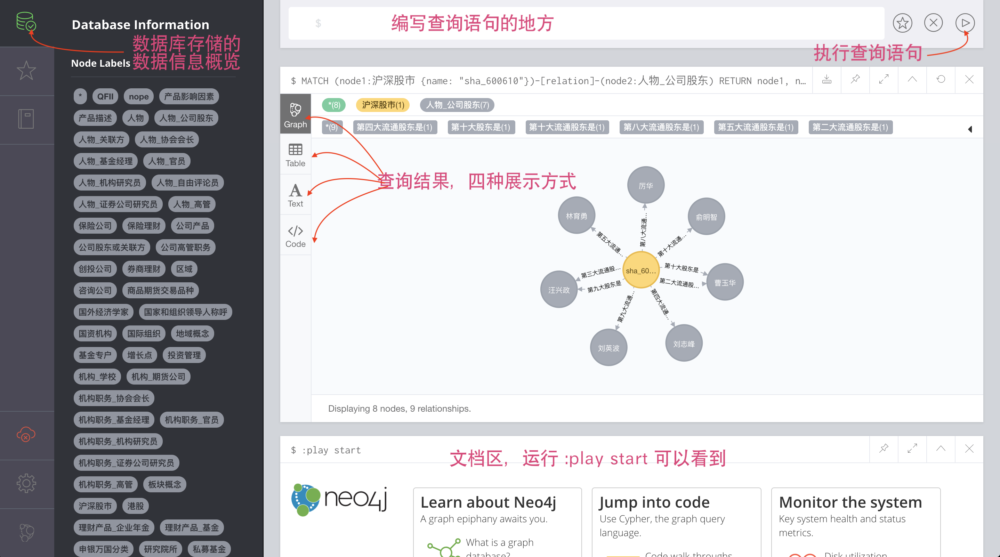
neo4j bloom
说起 neo4j bloom，到现在我还忍不住想称赞 neo4j 团队，虽然 bloom 不是实现了什么特别 NB 的算法，也没有什么伟大的创新，但是这个产品却是实打实的站在用户层面去考虑，一下子就把 neo4j 的可用性，宜用性，实用性提高了好几个档次了。
谈起 bloom，还得说我们准备做的知识图谱产品开展开了，我们做的每一个图谱，都有两个亮点的地方：
- 我们做的图谱背后有很多业内专家支持，我们需要把产品设计成支持这些专家修改更新图谱内容的模式
- 图谱的内容，都是会随着时间变更的，我们也要支持时间序列上的图谱，比如说可以查询某个节点特定时间区间的图谱
其中第一个亮点，我们之前做了很多调研，发现很多传统的图谱产品在内容更新和修改上都做得很复杂很不好用，比如说有的图谱更新是后台提供一个 excel 表格给相关专业人员去填写这个表格；有的产品呢是有专门做的一个内容管理后台，学会用那个管理后台还得话不少时间。最重要的是，如果以这种模式提供给专家去修改内容，首先我们还得让专家理解从 excel模版或者内容管理后台 到图谱内容结构这样一个过程的思维转变，要不然极有可能出现内容修改错误的情况。
所以，我们一直想做一个允许特定账号直接在图谱上进行修改的产品，比如说给专家的账号开通修改权限，专家可以和普通用户打开同样的产品页面，看到同样的产品内容，只是专家账号在点击图谱节点时，可以有一个修改节点及其关系的权限，做到实时修改，这样子极大的提高了专家操作的效率，而且还节省了不少前台，后台开发的工程量。
正当我们定下这个方案不久，我就看到了 neo4j 发布的关于 bloom 的文章和视频，真的大为惊叹，当时我就直接把文章和视频转发到团队的微信群里，neo4j 开发的 bloom 和我们设想的产品模式几乎一致，它直接想把我们做的事完成了，而且还做得漂亮，光说 bloom 的那个交互，就已经把国内不少做图谱的产品甩开几条街了。
感兴趣的盆友可以先看看这个视频体验体验：Neo4j Bloom: Investigating Patterns in Financial Transactions
3. Neo4j and Knowledge Graph
伴随 2012 年 google 正式发布知识图谱搜索引擎和 2013 年 facebook 开放知识图谱搜索入口以来，知识图谱迎来了一波发展浪潮，neo4j 作为原生的图数据库，也迎来了它的春天。但是就业内朋友交流来看，知识图谱类创业公司和产品数量上并不多，质量上也缺乏重磅产品，除了传统的社交网络方面（这方面有 facebook 的关系搜索和 linkedin 的人脉搜索）。究其原因，其实有两个比较大的原因，一个是熟悉图数据库，了解知识图谱的人才还比较少；另外一个原因是业务的抽象化本身门槛就比较高。
葛优在《天下无贼》中有一句话特别出名 “21世纪什么最贵？人才“。我们在业内交流下来，其实也发现一个比较值得思考的问题，就是虽然知识图谱发展也有六七年的样子，但其实真正在图数据库方面去研究的人才很少。同样是 NoSQL 数据库，为什么经常可以听到关于 mongo，redis 等数据库技术的讨论，却很少见到 neo4j 的技术问答呢？我们觉得，其中的原因可能是因为 mongo，redis 这类数据库相对于 neo4j 来说，是比较 general 的技术，就是说 mongo，redis 在各种应用中的大多数场景中都可以用到，它们并不依赖某一种特定类型的应用。而 neo4j 则有所不同，neo4j 比较专注在图相关的数据结构的存储和查询方面，而且 neo4j 本身还需要使用特定的查询语言 （cypher，我们前面也有讲过），一些企业和工程师就缺乏动力去使用这门新的技术。所以从这两个点来说，neo4j 的辨识度，流行度远远不及 mongo，redis 类的 nosql。下面是我查询了 google trend 自 2008 年来这三个关键词的表现，可见一斑。
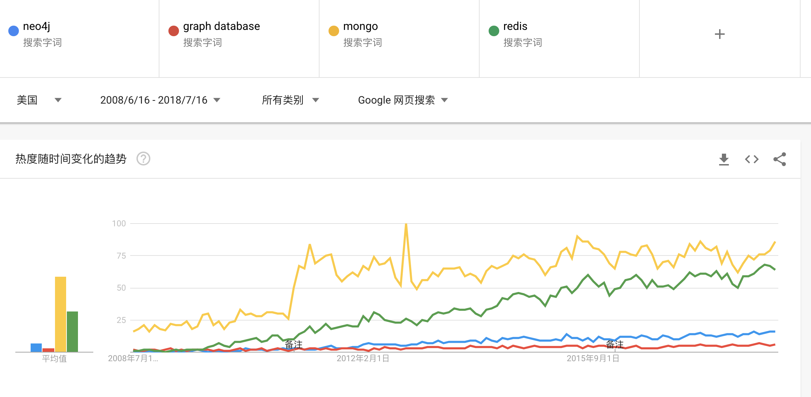
不过如果只看 neo4j 的 google trend 数据的话，它还是慢慢在走向人们的视野。
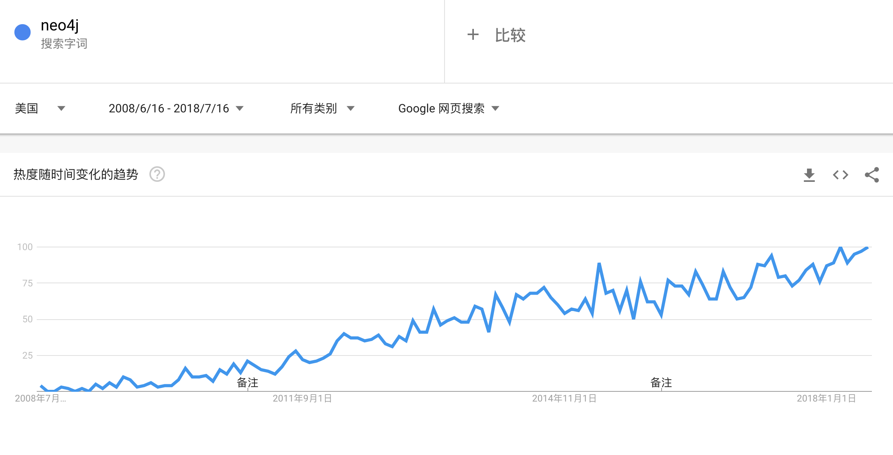
而说到知识图谱，其实国内外在这方面的成熟产品可以说凤毛麟角，出去上面我们说的技术方面的人才储备问题外，其实最大的还是本身业务的抽象化门槛太高。比如说，在金融领域有不少创业公司尝试过用知识图谱来描述和分析一个公司，咱们来看看下面这个案例截图：
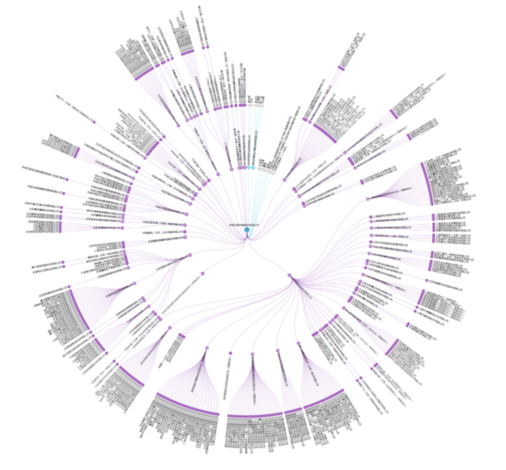
上面这个金融知识图谱，眨眼一看，似乎信息还挺齐全，可是如果站在一个金融专业投资者角度来看，问题就暴露很多了：
- 图谱本身缺乏时间信息，如果说图谱中的数据发生更新，如何在图谱中体现这个更新
- 图谱设计缺陷，看完这个图谱上下两个部分的文字内容，估计你多年的颈椎病都可以治好了，哈哈哈
- 图谱设计缺陷，有的公司光产品，子公司就有上百家，在图谱中如果一次性全展现开来，那个视觉效果可能没法让人接受
- 缺乏分析基础，类似股东股权关系的时候，在图谱中都没展示比例数据，没法做更细一步的分析
还有其他很多的点就不一一列出了，列这么多其实只是想说，在知识图谱这个领域，不管做什么产品都要于业务本身紧密相连，现在是一个论专业化，比专业性的时代，不能简简单单的把一个技术套到一个产品上就叫创新了，而是要通过技术把之前难以实现的具有价值的事情做成做好。
4. Summary
如果要用几句话来总结这篇 post 里我想表达的意思，我想应该是下面几句：
- 凡事均有因果，不论是做事还是思考，在没有找到核心底层逻辑之前，都是存在很大的挖掘和探索空间的；
- 做技术架构设计，如果你能回答下面几个问题，那你的架构就没有问题：
- 【1】你的同类产品的架构方案大概是什么样子的，他们都有哪些优缺点
- 【2】你的产品主要解决的核心问题和面临的核心挑战是哪些
- 【3】你的这个技术架构设计相对同类产品来说，相对同类产品有哪些优势，是如何解决上面的第二点中的问题的
- 图数据库，本质上是图数据结构的固化，查询解决方案，往底层追问，其实是对真实世界中非结构化的关联关系的计算机抽象表达
- 不管做架构还是做开发，永远要相信这个世界上没有最好的技术，只有最适合当前应用场景的技术
5. Reference
- History of Databases and Graph Database
- What is the graph database?
- 柯尼斯堡七桥问题
- keylines
- linkurio
- Graph_database
- 8 Solid Tips for Succeeding with Neo4j
- Graph Databases for Beginners: Native vs. Non-Native Graph Technology
- Neo4j Graph Storage
- An overview of Neo4j Internals
- Evolution of Neo4j with ACID transactions, HA cluster, and CRUD transactions
- How to Run a Cohort Analysis in Google Analytics
- 六度分隔理论
- Property Graphs Explained
- From SQL to Cypher – A hands-on Guide
- Neo4j Ecosystem
- Neo4j Browser User Interface Guide
- Introducing Neo4j Bloom: Graph Data Visualization for Everyone
- Neo4j Bloom for Visualization - Pre-release Demo of Beer Graph
- Neo4j Bloom: Investigating Patterns in Financial Transactions
- Google Knowledge Graph
- Introducing Graph Search Beta